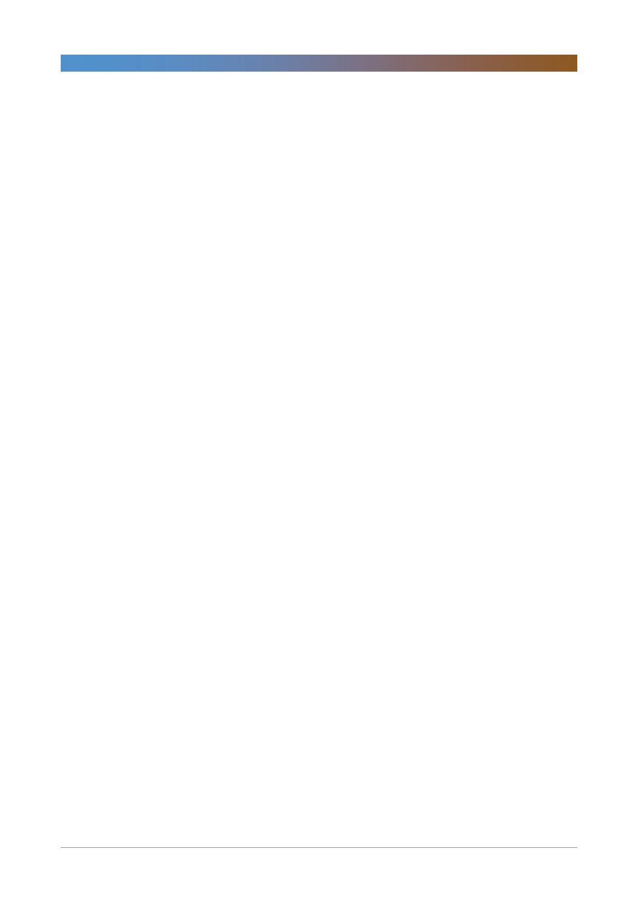

삼성생명(032830)
컨프런스콜 요약
[전자지분매각 자금 활용 방안]
- 5월 전자 지분 0.35% 매각해서 1.1조원 매각이익(세후 7,510억원)
- K-ICS 및 IFRS17이 도입되는 것을 감안해서 매각자금을 활용하는 게 우
선. 신자본규제에 맞춰 초장기채 매입에 활용
- 향후 여러 규제 등에 따라 입법사항, 금융그룸 통합감독에 대해 확정 사항이
많지 않아 지분 매각 규모 및 시기는 제시 어려움
- 신사업 투자 계획 확정된 사항 없음
[자산운용]
- 국내부동산 (과거 투자 매각 작업), 저수익/투자용 부동산자산 1조원 매각
절차 통해 500억~1,500억 정도 확보 기대 중
- 전반적인 회사 손익 계획하에 경상적으로 부동산 매각 진해하고 있음
- 매각 시장 상황(타이밍 등이 중요) 및 수요, 개별 부동산들의 상태도 종합적
으로 감안해서 결정 중
- 해외는 영국 물건(브렉시트 등 시장 상황 고려해 향후 침체될 것을 감안해
서 매각 진행), 국내 저수익 부동산은 회사 사용 목적 등을 고려해서 결정
[자산/부채 듀레이션]
- 부채듀레이션이 확대되어도 RBC 영향은 25%p 하락
[실적 전망]
- 보험영업이익은 2014년 이후 지속적으로 개선했지만 일회성 요인으로 올해
1.7조원 가이던스는 달성 어려움
- 즉시연금 관련 보험금 지급 전망: 일회성요인 금융당국의 암보험금 지금
300억 등 발생
- 소비자보호 규제로 사차익 부담 요인 많을 것으로 생각됨(부당 청구 및 병
원 관리 등으로 대응)
- 즉시연금은 이차익에 영향. 법원의 판단에 따라 추가 지급 규모 등 구체적인
사안 공유할 것. 법원 판단과 상관 없이 고객 보호 위에 계약서에 예시된 수
준에 맞춰 최저보증금 80억 수준 이차익에 반영 예정. 빠른 시일 내에 지급
될 예정
- 신계약비 한도 초과로 인한 추가상각 하반기에도 상반기와 비슷하게 340억
수준 예상
- 위험손해율은 하반기 2%p 정도 소폭 개선될 듯(사차익 8,400억원 전망)
- 올해 위험손해율은 일회성 요인으로 80% 초반, 경상적으로는 70% 후반
[향후 보장성 신계약 전망]
- 생보 보장성 시장 성장 지체. 특히 종신보험 시장이 제일 더디고, 건강보험
시장에서 그나마 소폭 성장 기대되기에 유병자 보험상품 등의 신상품 선도
적으로 출시
2